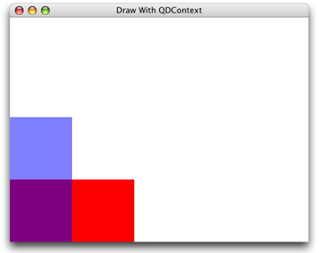
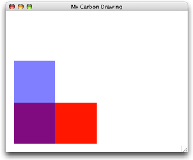

Graphics Contexts
A graphics context represents a drawing destination. It contains drawing parameters and all device-specific information needed to render the paint on a page to the destination, whether the destination is a window in an application, a bitmap, a PDF document, or a printer. You can obtain a graphics context by using Quartz context creation functions or by using higher-level functions provided in the Carbon, Cocoa, or Printing frameworks. Quartz provides creation functions for various flavors of Quartz graphics contexts including bitmap and PDF. The Carbon and Cocoa frameworks provide functions for obtaining window graphics contexts. The Printing framework provides functions that obtain a graphics context appropriate for the kind of destination printer you are using.
This chapter shows you how to create a graphics context for a variety of drawing destinations. A graphics context is represented in your code by the data type CGContextRef, which is an opaque data type. After you obtain a graphics context you can use Quartz 2D functions to draw to the context, perform operations (such as translations) on the context, and change graphics state parameters, such as line width and fill color.
“Creating a Window Graphics Context” shows how to get a context from the Cocoa and Carbon frameworks, what to do if you are moving QuickDraw code to Quartz 2D, and discusses the differences between the HIView and Quartz coordinate systems.
“Creating a PDF Graphics Context” provides code that shows how to obtain and draw into a PDF context.
“Creating a Bitmap Graphics Context” discusses the parameters needed to create a bitmap context, shows how to obtain and draw into one, and introduces one method you can use to draw the resulting image to a window graphics context.
Note: If you want to perform offscreen drawing, before you use a bitmap graphics context, you should first read “CGLayer Drawing.” CGLayer objects, introduced in Mac OS X v10.4, support drawing to layers and provide a much more optimized solution for offscreen drawing than bitmap graphics contexts provide.
“Obtaining a Graphics Context for Printing” describes how to use the Printing framework for Quartz 2D drawing.
Creating a Window Graphics Context
The Quartz 2D API provides no functions to obtain a windows graphics context. Instead, you use the Cocoa framework to obtain a context for a window created in Cocoa, and the Carbon framework to obtain a context for a window created in Carbon. Obtaining a window graphics context from the Cocoa framework is fairly straightforward. The approach for obtaining a window graphics context from the Carbon framework depends on whether you are creating a new Mac OS X application or moving a QuickDraw-based application to Quartz 2D.
Window Graphics Context in Cocoa
You obtain a Quartz graphics context from within the drawRect: routine of a Cocoa application using the following line of code:
CGContextRef myContext = [[NSGraphicsContext currentContext] graphicsPort]; |
The method currentContext returns the NSGraphicsContext instance of the current thread. The method graphicsPort returns the low-level, platform-specific graphics context represented by the receiver, which is a Quartz graphics context. (Don’t get confused by the method names; they are historical.) For more information see NSGraphicsContext.
After you obtain the graphics context, you can call any of the Quartz 2D drawing functions in your Cocoa application. You can also mix Quartz 2D calls with Cocoa drawing calls. You can see an example of Quartz 2D drawing to a Cocoa view by looking at Figure 2-1. The drawing consists of two overlapping rectangles, an opaque red one and a partially transparent blue one. You’ll learn more about transparency in “Color and Color Spaces.” The ability to control how much you can “see through” colors is one of the hallmark features of Quartz 2D.
To create the drawing in Figure 2-1, you first create a Cocoa application Xcode project. In Interface Builder, drag a Custom View to the window and subclass it. Then write an implementation for the subclassed view, similar to what Listing 2-1 shows. For this example, the subclassed view is named MyQuartzView. (You can name it whatever you like.) The drawRect: method for the view contains all the Quartz drawing code. A detailed explanation for each numbered line of code appears following the listing.
Note: The drawRect: method of the NSView class is invoked automatically each time the view needs to be drawn. To find out more information about overriding the drawRect: method, see NSView Class Reference.
Listing 2-1 Code that draws to a window graphics context
@implementation MyQuartzView |
- (id)initWithFrame:(NSRect)frameRect |
{ |
self = [super initWithFrame:frameRect]; |
return self; |
} |
- (void)drawRect:(NSRect)rect |
{ |
CGContextRef myContext = [[NSGraphicsContext // 1 |
currentContext]graphicsPort]; |
// ********** Your drawing code here ********** // 2 |
CGContextSetRGBFillColor (myContext, 1, 0, 0, 1);// 3 |
CGContextFillRect (myContext, CGRectMake (0, 0, 200, 100 ));// 4 |
CGContextSetRGBFillColor (myContext, 0, 0, 1, .5);// 5 |
CGContextFillRect (myContext, CGRectMake (0, 0, 100, 200));// 6 |
} |
@end |
Here’s what the code does:
Obtains a graphics context for the view.
This is where you insert your drawing code. The four lines of code that follow are examples of using Quartz 2D functions.
Sets a red fill color that’s fully opaque. For information on colors and alpha (which sets opacity), see “Color and Color Spaces.”
Fills a rectangle whose origin is (
0,0) and whose width is200and height is100. For information on drawing rectangles, see “Paths.”Sets a blue fill color that’s partially transparent.
Fills a rectangle whose origin is (
0,0) and which width is100and height is200.
Window Graphics Context in Carbon: HIView
If you are using the Carbon framework to create a new application for Mac OS X, you will want to use the HIToolbox API, and HIView in particular, for Quartz 2D drawing. HIView is the Quartz-based object-oriented view system available for implementing Carbon user interface elements in Mac OS X. You use Carbon events to obtain a window graphics context from an HIView by installing an event handler that responds to a draw event (kEventControlDraw). As long as the HIView is in a composited window, you can obtain the event parameter kEventParamCGContextRef from the draw event. Draw events for windows that are not composited do not contain this event parameter, which means you must use a composited window. If you can’t, see “Windows Graphics Context: QuickDraw.”
You need to perform these steps to draw to an HIView:
In Xcode, create a Carbon application.
Open the
.nibfile provided by Xcode and place an HIView in the main window.Compositing must be turned on for the window. It’s on by default, so make sure you don’t turn it off.
Assign a signature and an ID to the view, as shown in Figure 2-2.
You don’t have to use the signature and ID in the figure. Make note of what you assign to these items. You need to declare constants in your code that have these exact values. Otherwise, your code won’t draw to the view.
In your application code, declare constants for the signature and ID.
Install an event handler on the HIView that you want to draw to. The handler must process the event whose class and kind are {
kEventClassControl,kEventControlDraw}.In your event handler, obtain a graphics context by calling the Carbon Event Manager function
GetEventParameterand passing the constantkEventParamCGContextRef.
Listing 2-2 and Listing 2-3 show code that implements the previous steps. Listing 2-2 is the main routine and Listing 2-3 implements the event handler for the HIView. The handler obtains a graphics context for an HIView and then draws into that view. A detailed explanation for each numbered line of code appears following each listing.
Listing 2-2 The main routine in a Carbon drawing application
#define kMyHIViewSignature 'mVue'// 1 |
#define kMyHIViewFieldID 130 |
int main (int argc, char* argv[]) |
{ |
IBNibRef nibRef; |
OSStatus err; |
WindowRef myMainWindow; |
HIViewRef myHIView;// 2 |
static const EventTypeSpec myHIViewSpec[] = {kEventClassControl,// 3 |
kEventControlDraw }; |
static const HIViewID myHIViewID = { kMyHIViewSignature,// 4 |
kMyHIViewFieldID }; |
err = CreateNibReference (CFSTR("main"), &nibRef); |
require_noerr (err, CantGetNibRef); |
err = SetMenuBarFromNib(nibRef, CFSTR("MenuBar")); |
require_noerr (err, CantSetMenuBar); |
err = CreateWindowFromNib (nibRef, CFSTR("MainWindow"), &myMainWindow); |
require_noerr (err, CantCreateWindow ); |
DisposeNibReference(nibRef); |
HIViewFindByID (HIViewGetRoot(myMainWindow), myHIViewID, &myHIView); // 5 |
err = InstallEventHandler (GetControlEventTarget (myHIView), // 6 |
NewEventHandlerUPP (MyDrawEventHandler), |
GetEventTypeCount (myHIViewSpec), |
myHIViewSpec, |
(void *) myHIView, |
NULL); |
ShowWindow (myMainWindow); |
RunApplicationEventLoop(); |
CantCreateWindow: |
CantSetMenuBar: |
CantGetNibRef: |
return err; |
} |
Here’s what the code does:
Declares constants for the signature and ID that you assign to the HIView in Interface Builder. Make sure they match exactly and that the combination is unique to your application.
Declares a variable for an
HIViewRefdata type to reference the HIView. You need this to set up the event handler.Declares an event specification for the draw event. This is the event your HIView event handler responds to. Your event handler can respond to as many events as you’d like. This example handles only the draw event so that you can see exactly what needs to be done to handle drawing.
Declares an HIView ID using the constants for the signature and ID that you previously assigned and that uniquely identify the HIView in your application.
Obtains the reference to the HIView you placed in the window.
Calls the Carbon Event Manager function to install your event handler on the HIView.
Listing 2-3 An event handler for an HIView
OSStatus MyDrawEventHandler (EventHandlerCallRef myHandler, |
EventRef event, void *userData) |
{ |
OSStatus status = noErr; |
CGContextRef myContext; |
HIRect bounds; |
status = GetEventParameter (event, // 1 |
kEventParamCGContextRef, |
typeCGContextRef, |
NULL, |
sizeof (CGContextRef), |
NULL, |
&myContext); |
require_noerr(status, CantGetGraphicsContext); |
HIViewGetBounds ((HIViewRef) userData, &bounds);// 2 |
require_noerr(status, CantGetBoundingRectangle); |
// ********** Your drawing code here ********** // 3 |
CGContextSetRGBFillColor (myContext, 1, 0, 0, 1);// 4 |
CGContextFillRect (myContext, CGRectMake(0, 0, 200, 100 ));// 5 |
CGContextSetRGBFillColor (myContext, 0, 0, 1, .5);// 6 |
CGContextFillRect (myContext, CGRectMake (0, 0, 100, 200 ));// 7 |
CantGetGraphicsContext: |
CantGetBoundingRectangle: |
return status; |
} |
Here’s what the code does:
Calls the Carbon Event Manager function to obtain the graphics context from the event. You must pass:
The event to get the parameter from. The system passes this event to your handler. Recall that you registered for the draw event.
The symbolic name of the parameter you want to obtain. In this case, pass the system-defined constant
kEventParamCGContextRef.The desired type of the parameter, which you specify as the system-defined constant
typeCGContextRef.The actual type of the parameter, which is
NULLbecause it’s not necessary to get this information for this example.The size of the data you are obtaining.
The actual size of the data, which is
NULLbecause it’s not necessary to get this information for this example.A pointer to a
CGContextRefdata type which, on output, is the window graphics context for the view. This is what you’ll draw to.
Obtains the bounding rectangle for the HIView. Note that this code assumes the
userDatapassed to the event handler is an HIViewRef. Another approach you can take is to obtain the view by extracting the event parameterkEventParamDirectObjectfrom the event.This is where you insert your drawing code. The four lines of code below this are examples of using Quartz 2D functions.
Sets a red fill color that’s fully opaque. For information on colors and alpha (which sets opacity), see “Color and Color Spaces.”
Fills a rectangle whose origin is (
0,0) and whose width is200and height is100. For information on drawing rectangles, see “Paths.”Sets a blue fill color that’s partially transparent.
Fills a rectangle whose origin is (
0,0) and which width is100and height is200.
Figure 2-3 shows the output produced by the drawing code in Listing 2-3. Compare Figure 2-3 with the output produced by the same Quartz 2D drawing calls from a Cocoa application, and shown in Figure 2-1. Notice that one drawing is flipped with respect to the other.
The Quartz coordinate system, as mentioned in “Overview of Quartz 2D,” places the origin at the lower-left corner of the view. But HIView returns a context that places the origin a the upper-left corner of the view. Each origin has its advantages. HIView uses the upper left to ensure that the coordinates of objects, such as controls, do not change as the user resizes the window. If you want to use the Quartz coordinate system, you can add the following two lines of code to your event handler, placed just before your drawing code:
CGContextTranslateCTM (myContext, 0, bounds.size.height); |
CGContextScaleCTM (myContext, 1.0, -1.0); |
The first line of code translates the coordinate system so that the y values are moved towards the bottom of the HIView by the height of the HIView bounding rectangle. If you were to draw now, your drawing would be below the HIView, not in a visible area.
The second line of code flips the y-coordinates by a factor of –1.0. Because you just translated the coordinates below the HIView, the scaling effectively flips them into the HIView. After this operation, the origin is at the lower left of the HIView, with the y values increasing from bottom to top. The x values are unchanged; they still increase from left to right.
Figure 2-4 shows the output from Listing 2-3 after inserting the translation and scaling code before the drawing code in the handler. The sample code in the rest of this book uses the Quartz coordinate system. If you plan to use an HIView to try out the sample code from the book, you may want to transform the coordinates so that your output matches that shown in the figures.
For more information, see Carbon Event Manager Reference and HIView Programming Guide.
Windows Graphics Context: QuickDraw
If your application can’t use a compositing window, or if you are moving older QuickDraw code to Quartz, you might need an alternative to obtaining a graphics context from HIView. The QuickDraw functions QDBeginCGContext and QDEndCGContext provide such an alternative. The function QDBeginCGContext obtains a graphics context for a window port and signals the beginning of Quartz 2D drawing calls. The function QDEndCGContext signals the end of Quartz 2D drawing calls and restores the window port. These functions must be used in pairs.
The code in Listing 2-4 produces the output shown in Figure 2-5. A detailed explanation for each numbered line of code appears following Listing 2-4. Note in the figure that the graphics context provided by QDBeginCGContext uses Quartz coordinates. Unlike previous examples, the code draws to a window, not a view, which is why the drawing starts in the window corner and is not indented as it is in Figure 2-1, Figure 2-3, and Figure 2-4.
Figure 2-5 A window that contains a drawing from a graphics context obtained from QDBeginCGContext
Listing 2-4 Code that obtains a graphics context from QDBeginCGContext
void MyDrawInWindow (WindowRef window) |
{ |
CGContextRef myContext; |
SetPortWindowPort (window);// 1 |
QDBeginCGContext (GetWindowPort (window), &myContext);// 2 |
// ********** Your drawing code here ********** // 3 |
CGContextSetRGBFillColor (myContext, 1, 0, 0, 1); |
CGContextFillRect (myContext, CGRectMake (0, 0, 200, 100)); |
CGContextSetRGBFillColor (myContext, 0, 0, 1, .5); |
CGContextFillRect (myContext, CGRectMake (0, 0, 100, 200)); |
CGContextFlush(myContext);// 4 |
QDEndCGContext (GetWindowPort(window), &myContext);// 5 |
} |
Here’s what the code does:
Sets the current graphics port to the window port.
Returns a Quartz graphics context for the supplied color graphics port.
Performs Quartz 2D drawing. You would replace this and the following four lines of code with the Quartz drawing routines appropriate for your application.
Note: You can’t mix Quartz 2D routines with QuickDraw calls. You need to replace QuickDraw with Quartz 2D routines that provide similar functionality. For more information, see Quartz Programming Guide for QuickDraw Developers.
Forces all pending drawing operations in a window graphics context to be rendered immediately to the destination device. Normally you don’t need to call this function. But you must call this function when you obtain a graphics context using the function
QDBeginCGContext. As an alternative, you can call the functionCGContextSynchronize, which marks a window graphics context for updating.Ends the Quartz 2D drawing session.
Creating a PDF Graphics Context
When you create a PDF graphics context and draw to that context, Quartz records your drawing as a series of PDF drawing commands written to a file. You supply a location for the PDF output and a default media box—a rectangle that specifies bounds of the page. Figure 2-6 shows the result of drawing to a PDF graphics context and then opening the resulting PDF in Preview.
The Quartz 2D API provides two functions that create a PDF graphics context:
CGPDFContextCreateWithURL, which you use when you want to specify the location for the PDF output as a Core Foundation URL. Listing 2-5 shows how to use this function to create a PDF graphics context.CGPDFContextCreate, which you use when you want the PDF output sent to a data consumer. (For more information see “Data Management.”) Listing 2-6 shows how to use this function to create a PDF graphics context.
A detailed explanation for each numbered line of code follows each listing.
Listing 2-5 A routine that calls CGPDFContextCreateWithURL to create a PDF graphics context
CGContextRef MyCreatePDFContext (const CGRect *inMediaBox, |
CFStringRef path) |
{ |
CGContextRef myOutContext = NULL; |
CFURLRef url; |
url = CFURLCreateWithFileSystemPath (NULL, // 1 |
path, |
kCFURLPOSIXPathStyle, |
false); |
if (url != NULL) { |
myOutContext = CGPDFContextCreateWithURL (url,// 2 |
inMediaBox, |
NULL); |
CFRelease(url);// 3 |
} |
return myOutContext;// 4 |
} |
Here’s what the code does:
Calls the Core Foundation function to create a CFURL object from the CFString object supplied to the
MyPDFContextCreatefunction. You passNULLas the first parameter to use the default allocator. You also need to specify a path style, which for this example is a POSIX-style pathname.Calls the Quartz 2D function to create a PDF graphics context using the PDF location just created (as a CFURL object) and a rectangle that specifies the bounds of the PDF. The rectangle (a
CGRect) was passed to theMyPDFContextCreatefunction and is the default page media bounding box for the PDF.Releases the CFURL object.
Returns the PDF graphics context. The caller must release the graphics context when it is no longer needed.
Listing 2-6 A routine that calls CGPDFContextCreate to create a PDF graphics context
CGContextRef MyCreatePDFContext (const CGRect *inMediaBox, |
CFStringRef path) |
{ |
CGContextRef myOutContext = NULL; |
CFURLRef url; |
CGDataConsumerRef dataConsumer; |
url = CFURLCreateWithFileSystemPath (NULL, // 1 |
path, |
kCFURLPOSIXPathStyle, |
false); |
if (url != NULL) |
{ |
dataConsumer = CGDataConsumerCreateWithURL (url);// 2 |
if (dataConsumer != NULL) |
{ |
myOutContext = CGPDFContextCreate (dataConsumer, // 3 |
inMediaBox, |
NULL); |
CGDataConsumerRelease (dataConsumer);// 4 |
} |
CFRelease(url);// 5 |
} |
return myOutContext;// 6 |
} |
Here’s what the code does:
Calls the Core Foundation function to create a CFURL object from the CFString object supplied to the
MyPDFContextCreatefunction. You passNULLas the first parameter to use the default allocator. You also need to specify a path style, which for this example is a POSIX-style path name.Creates a Quartz data consumer object using the CFURL object. If you don’t want to use a CFURL object (for example, you want to place the PDF data in a location that can’t be specified by a CFURL object), you can instead create a data consumer from a set of callback functions that you implement in your application. For more information, see “Data Management.”
Calls the Quartz 2D function to create a PDF graphics context passing as parameters the data consumer and the rectangle (of type
CGRect) that was passed to theMyPDFContextCreatefunction. This rectangle is the default page media bounding box for the PDF.Releases the data consumer.
Releases the CFURL object.
Returns the PDF graphics context. The caller must release the graphics context when it is no longer needed.
Listing 2-7 shows how to call the MyCreatePDFContext routine and draw to it. A detailed explanation for each numbered line of code appears following the listing.
Listing 2-7 Code that draws to a PDF graphics context
CGRect mediaBox;// 1 |
mediaBox = CGRectMake (0, 0, myPageWidth, myPageHeight);// 2 |
myPDFContext = MyCreatePDFContext (&mediaBox, CFSTR("test.pdf"));// 3 |
CGContextBeginPage(myPDFContext, &mediaBox);// 4 |
// ********** Your drawing code here **********// 5 |
CGContextSetRGBFillColor (myPDFContext, 1, 0, 0, 1); |
CGContextFillRect (myPDFContext, CGRectMake (0, 0, 200, 100 )); |
CGContextSetRGBFillColor (myPDFContext, 0, 0, 1, .5); |
CGContextFillRect (myPDFContext, CGRectMake (0, 0, 100, 200 )); |
CGContextEndPage(myPDFContext);// 6 |
CGContextRelease(myPDFContext);// 7 |
Here’s what the code does:
Declares a variable for the rectangle that you use to define the PDF media box.
Sets the origin of the media box to
(0,0)and the width and height to variables supplied by the application.Calls the function
MyCreatePDFContext(See Listing 2-6) to obtain a PDF graphics context, supplying a media box and a path name. The macroCFSTRconverts a string to aCFStringRefdata type.Signals the start of a page. This function is used for page-paged graphics, which is what PDF drawing is. This example passes the media box to define the page boundary. You don’t have to pass the same rectangle you used to set up the PDF graphics context. The rectangle you pass to
CGContextBeginPagesupersedes the rectangle you pass to set up the PDF graphics context.Note: Starting in Mac OS X v10.4, you can call the function
CGPDFContextBeginPageand its companionCGPDFContextEndPageto delineate PDF pages. You can provide a CFDictionary to the functionCGPDFContextBeginPageto specify page properties.Calls Quartz 2D drawing functions. You replace this and the following four lines of code with the drawing code appropriate for your application.
Signals the end of the PDF page.
Releases the PDF graphics context when it is no longer needed.
You can write any content to a PDF that’s appropriate for your application—images, text, path drawing—and you can add links and encryption. For more information see “PDF Document Creation, Viewing, and Transforming.”
Creating a Bitmap Graphics Context
A bitmap graphics context accepts a pointer to a memory buffer that contains storage space for the bitmap. When you paint into the bitmap graphics context, the buffer is updated. After you release the graphics context, you have a fully updated bitmap in the pixel format you specify.
Note: Bitmap graphics contexts are sometimes used for drawing offscreen. Before you decide to use a bitmap graphics context for this purpose, see “CGLayer Drawing.” CGLayer objects (CGLayerRef), available in Mac OS X v10.4 and later, are optimized for offscreen drawing because, whenever possible, Quartz caches layers on the video card.
You use the function CGBitmapContextCreate to create a bitmap graphics context. This function takes the following parameters:
data. Supply a pointer to the destination in memory where you want the drawing rendered. The size of this memory block should be at least (bytesPerRow*height) bytes.width. Specify the width, in pixels, of the bitmap.height. Specify the height, in pixels, of the bitmap.bitsPerComponent. Specify the number of bits to use for each component of a pixel in memory. For example, for a 32-bit pixel format and an RGB color space, you would specify a value of 8 bits per component. See “Supported Pixel Formats.”bytesPerRow. Specify the number of bytes of memory to use per row of the bitmap.colorspace. The color space to use for the bitmap context. You can provide a Gray, RGB, CMYK, or NULL color space when you create a bitmap graphics context. For detailed information on color spaces and color management principles, see Color Management Overview. For information on creating and using color spaces in Quartz, see “Color and Color Spaces.” For information about supported color spaces, see “Color Spaces and Bitmap Layout” in the “Bitmap Images and Image Masks” chapter.bitmapInfo. Bitmap layout information, expressed as aCGImageBitmapInfoconstant in Mac OS X v10.4, that specifies whether the bitmap should contain an alpha component, the relative location of the alpha component (if there is one) in a pixel, whether the alpha component is premultiplied, and whether the color components are integer or floating point values. (In earlier versions of Mac OS X, this constant is expressed as aCGImageAlphaInfoconstant.) For detailed information on what these constants are, when each is used, and Quartz-supported pixel formats for bitmap graphics contexts and images, see “Color Spaces and Bitmap Layout” in the “Bitmap Images and Image Masks” chapter.
Listing 2-8 shows how to create a bitmap graphics context. When you draw into the resulting bitmap graphics context, Quartz records your drawing as bitmap data in the specified block of memory. A detailed explanation for each numbered line of code follows the listing.
Listing 2-8 A routine that creates a bitmap graphics context
CGContextRef MyCreateBitmapContext (int pixelsWide, |
int pixelsHigh) |
{ |
CGContextRef context = NULL; |
CGColorSpaceRef colorSpace; |
void * bitmapData; |
int bitmapByteCount; |
int bitmapBytesPerRow; |
bitmapBytesPerRow = (pixelsWide * 4);// 1 |
bitmapByteCount = (bitmapBytesPerRow * pixelsHigh); |
colorSpace = CGColorSpaceCreateWithName(kCGColorSpaceGenericRGB);// 2 |
bitmapData = malloc( bitmapByteCount );// 3 |
if (bitmapData == NULL) |
{ |
fprintf (stderr, "Memory not allocated!"); |
return NULL; |
} |
context = CGBitmapContextCreate (bitmapData,// 4 |
pixelsWide, |
pixelsHigh, |
8, // bits per component |
bitmapBytesPerRow, |
colorSpace, |
kCGImageAlphaPremultipliedLast); |
if (context== NULL) |
{ |
free (bitmapData);// 5 |
fprintf (stderr, "Context not created!"); |
return NULL; |
} |
CGColorSpaceRelease( colorSpace );// 6 |
return context;// 7 |
} |
Here’s what the code does:
Declares a variable to represent the number of bytes per row. Each pixel in the bitmap in this example is represented by 4 bytes; 8 bits each of red, green, blue, and alpha.
Creates a generic RGB color space. You can also create a CMYK color space. See “Color and Color Spaces” for more information and for a discussion of generic color spaces versus device dependent ones.
Calls the
mallocfunction to create a block of memory in which to store the bitmap data. This example creates a 32-bit RGBA bitmap (that is, an array with 32 bits per pixel, each pixel containing 8 bits each of red, green, blue, and alpha information). Each pixel in the bitmap occupies 4 bytes of memory.Creates a bitmap graphics context, supplying the bitmap data, the width and height of the bitmap, the number of bits per component, the bytes per row, the color space, and a constant that specifies whether the bitmap should contain an alpha channel and its relative location in a pixel. The constant
kCGImageAlphaPremultipliedLastindicates that the alpha component is stored in the last byte of each pixel and that the color components have already been multiplied by this alpha value. See “The Alpha Value” for more information on premultiplied alpha.If the context isn’t created for some reason, frees the memory allocated for the bitmap data.
Releases the color space.
Returns the bitmap graphics context. The caller must release the graphics context when it is no longer needed.
Listing 2-9 shows code that calls MyCreateBitmapContext to create a bitmap graphics context, uses the bitmap graphics context to create a CGImage, then draws the resulting image to a window graphics context. Figure 2-7 shows the image drawn to the window. A detailed explanation for each numbered line of code follows the listing.
Listing 2-9 Code that draws to a bitmap graphics context
CGRect myBoundingBox;// 1 |
myBoundingBox = CGRectMake (0, 0, myWidth, myHeight);// 2 |
myBitmapContext = MyCreateBitmapContext (400, 300);// 3 |
// ********** Your drawing code here ********** // 4 |
CGContextSetRGBFillColor (myBitmapContext, 1, 0, 0, 1); |
CGContextFillRect (myBitmapContext, CGRectMake (0, 0, 200, 100 )); |
CGContextSetRGBFillColor (myBitmapContext, 0, 0, 1, .5); |
CGContextFillRect (myBitmapContext, CGRectMake (0, 0, 100, 200 )); |
myImage = CGBitmapContextCreateImage (myBitmapContext);// 5 |
CGContextDrawImage(myContext, myBoundingBox, myImage);// 6 |
char *bitmapData = CGBitmapContextGetData(myBitmapContext); // 7 |
CGContextRelease (myBitmapContext);// 8 |
if (bitmapData) free(bitmapData); // 9 |
CGImageRelease(myImage);// 10 |
Here’s what the code does:
Declares a variable to store the origin and dimensions of the bounding box into which Quartz will draw an image created from the bitmap graphics context.
Sets the origin of the bounding box to (0,0) and the width and height to variables previously declared, but whose declaration are not shown in this code.
Calls the application supplied function
MyCreateBimapContext(see Listing 2-8) to create a bitmap context that is 400 pixels wide and 300 pixels high. You can create a bitmap graphics context using any dimensions that are appropriate for your application.Calls Quartz 2D functions to draw into the bitmap graphics context. You would replace this and the next four lines of code with drawing code appropriate for your application.
Creates a Quartz 2D image (
CGImageRef) from the bitmap graphics context. The functionCGBitmapContextCreateImageis available in Mac OS X v10.4 and later. For information on creating Quartz 2D images from a bitmap graphics context in earlier versions of Mac OS X, see “Bitmap Images and Image Masks.”Draws the image into the location in the window graphics context that is specified by the bounding box. The bounding box specifies the location and dimensions in user space in which to draw the image.
This example does not show the creation of the window graphics context. See “Creating a Window Graphics Context” for information on how to create one.
Gets the bitmap data associated with the bitmap graphics context.
Releases the bitmap graphics context when it is no longer needed.
Free the bitmap data if it exists.
Releases the image when it is no longer needed.
Figure 2-7 An image created from a bitmap graphics context and drawn to a window graphics context
Supported Pixel Formats
Table 2-1 summarizes the pixel formats that are supported for bitmap graphics context, the associated color space (cs), and the format availability in versions of Mac OS X. The pixel format is specified as bits per pixel (bpp) and bits per component (bpc). The table also includes the bitmap information constant associated with that pixel format. See CGImage Reference for details on what each of the bitmap information format constants represent.
CS | Pixel Format and Bitmap Information Constant | Availability |
|---|---|---|
Gray | 8 bpp, 8 bpc, | 10.0 |
Null | 8 bpp, 8 bpc, | 10.3 |
RGB | 16 bpp, 5 bpc, | 10.0 |
RGB | 32 bpp, 8 bpc, | 10.0 |
RGB | 32 bpp, 8 bpc, | 10.0 |
RGB | 32 bpp, 8 bpc, | 10.0 |
RGB | 32 bpp, 8 bpc, | 10.0 |
CMYK | 32 bpp, 8 bpc, | 10.3 |
Gray | 32 bpp, 32 bpc, | 10.4 |
RGB | 128 bpp, 32 bpc, | 10.4 |
RGB | 128 bpp, 32 bpc, | 10.4 |
CMYK | 128 bpp, 32 bpc, | 10.4 |
Gray | 16 bpp, 16 bpc, | 10.5 |
RGB | 64 bpp, 16 bpc, | 10.5 |
RGB | 64 bpp, 16 bpc, | 10.5 |
CMYK | 64 bpp, 16 bpc, | 10.5 |
Anti-Aliasing
Bitmap graphics contexts support anti-aliasing, which is the process of artificially correcting the jagged (or aliased) edges you sometimes see in bitmap images when text or shapes are drawn. These jagged edges occur when the resolution of the bitmap is significantly lower than the resolution of your eyes. To make objects appear smooth in the bitmap, Quartz uses different colors for the pixels that surround the outline of the shape. By blending the colors in this way, the shape appears smooth. You can see the effect of using anti-aliasing in Figure 2-8. You can turn anti-aliasing off for a particular bitmap graphics context by calling the function CGContextSetShouldAntialias. The anti-aliasing setting is part of the graphics state.
As of Mac OS X v10.4 you can control whether or not to allow anti-aliasing for a particular graphics context by using the function CGContextSetAllowsAntialiasing. Pass true to this function to allow anti-aliasing; false not to allow it. This setting is not part of the graphics state. Quartz performs anti-aliasing for a graphics context if you allow anti-aliasing by passing true to CGContextSetAllowsAntialiasing and you set the anti-aliasing graphics state parameter to true by calling CGContextSetShouldAntialias.
Obtaining a Graphics Context for Printing
When you use the Carbon Printing Manager to print from an application in Mac OS X, you call the function PMSessionGetGraphicsContext to obtain a graphics context for each page you print. The Carbon Printing Manager manages the graphics context for your application so that your documents are output appropriately, whether to a raster printer or as PostScript data.
The code in Listing 2-10 is an excerpt from a more complex printing routine. The purpose is to point out the basic calls you need to make to print to a Quartz graphics context, and not to show you how to use the Carbon Printing Manager. You can find detailed information on how to print in Supporting Printing in Your Carbon Application and Carbon Printing Manager Reference.
A detailed explanation for each numbered line of code appears following the listing. Within the code, embedded comments provide you with additional guidance.
Listing 2-10 Code that prints to a Quartz graphics context
CFStringRef strings[1]; |
CFArrayRef myGraphicsContextsArray; |
CGContextRef printingContext; |
PMPrintSession printSession; |
strings[0] = kPMGraphicsContextCoreGraphics; // 1 |
myGraphicsContextsArray = CFArrayCreate (kCFAllocatorDefault,// 2 |
(const void **) strings, |
1, |
&kCFTypeArrayCallBacks); |
if (myGraphicsContextsArray != NULL) |
{ |
PMSessionSetDocumentFormatGeneration (printSession,// 3 |
kPMDocumentFormatPDF, |
myGraphicsContextsArray, |
NULL); |
CFRelease (myGraphicsContextsArray); |
} |
// More of your print loop code here |
// Your call to PMSessionBeginDocument |
// Your call to PMSessionBeginPage here |
PMSessionGetGraphicsContext (printSession,// 4 |
kPMGraphicsContextCoreGraphics, |
(void **) &printingContext); |
// Use Quartz 2D routines to draw content to the context |
// Then, continue your print loop |
Here’s what the code does:
Assigns the Carbon Printing Manager constant
kPMGraphicsContextCoreGraphicsto the first element of an array of strings. This constant specifies a Quartz 2D context.Calls the Core Foundation array creation function to create an array that you later pass as a parameter to the function
PMSessionSetDocumentFormatGeneration.Calls the Carbon Printing Manager function
PMSessionSetDocumentFormatGenerationto request a spool file format and supply the graphics context types to use for drawing pages within the print loop. You pass four parameters:A print session—the code here assumes the print session was already created. For more information see Carbon Printing Manager Reference.
A spool file format. Pass
kPMDocumentFormatPDF.A graphics context array. This array has one item in it (
kPMGraphicsContextCoreGraphics) to specify a Quartz graphics context, and not a QuickDraw context. (QuickDraw is what older Mac OS 9 applications use because Quartz is not available prior to Mac OS X.)NULL. This parameter is reserved for future use.
Calls the Carbon Printing Manager function
PMSessionGetGraphicsContextto obtain a Quartz graphics context for drawing. After you obtain the context, you can use Quartz 2D routines to draw content to the context. Then, continue with the appropriate print loop code. (Note that you cannot use QuickDraw routines when you print to a Quartz graphics context.)You call the function
PMSessionGetGraphicsContextfor each page you print.
© 2001, 2007 Apple Inc. All Rights Reserved. (Last updated: 2007-12-11)